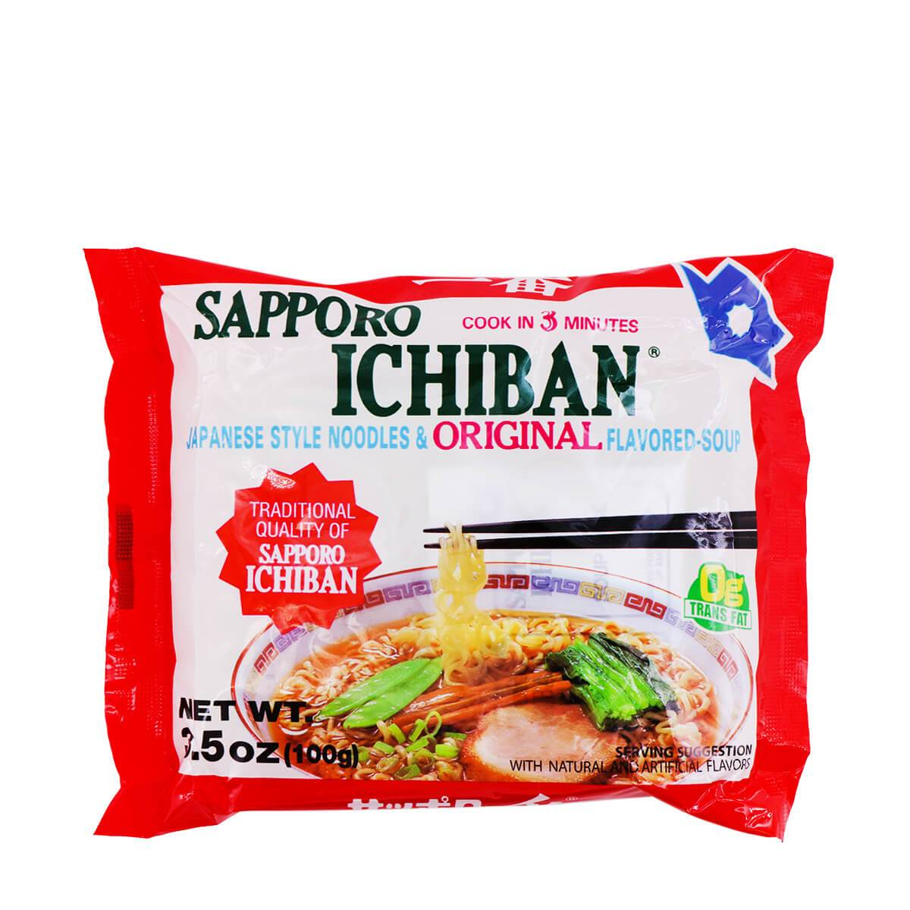
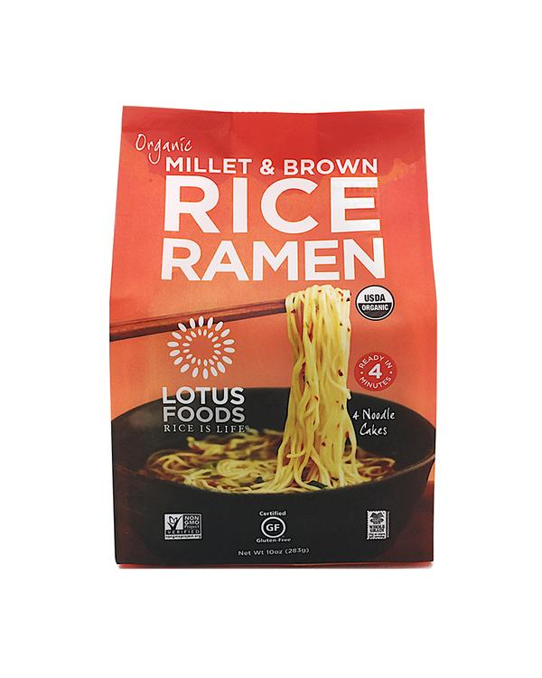

These are a few easy recipes that I can eat day in and day out, a few of my favorites; some elevation to normal collegiate staples.
Best Coldcut Sandwich
Yes I know this may sound simple, but I promise you it’s the best one you will ever have.
Serving Size:1 hungry college student
Ingredients:
Assemble the sandwhich as follows, toasted slice of bread #1, cheese, salami, turkey, and sink-washed arugula
Add a generous spread of mayo and a few shakes of cholula hot sauce onto the toasted slice of bread #2, then marry the two halves together, cut into triangles, and serve as the bread is hot.
Ramen 2 Ways
My last recipies will focus on a collegiate classic, ramen noodles.
Saporo Ichiban & Over-Easy Egg

Serving Size:1 hungry college student
Ingredients:
Bring 2 cups of water to a boil
When boiling, place one egg slowly into the pot and let sit for 12 minutes
Upon completion, take the egg out with a label and place into a bath of cold water and ice
Place the block of saporo ichiban into the boiling water for 7-8 minutes until noodles are soft
Put the cooked noodles into a bowl along with enough of the hot water to satisfy your want. I used to enjoy my noodles completely dry, now I cannot eat them without making it a soup
Take the egg out of the ice bath and carefully crack it, it can go whole into the soup once it is cracked.
Chop up chives to garnish the soup with, cut the easy boiled egg into two and enjoy!
Sesame Gluten Free Rice Ramen

Serving Size:1 hungry college student
Ingredients:
Bring 2 cups of water to a boil
Place the block of rice ramen into the boiling water for 9-10 minutes until noodles are soft, the rice ramen will take longer to separate and cook than traditional ramen.
Put the ramen noodles into a bowl with 2 tablespoons of the water used to cook the pasta to keep the noodles from drying out.
Add 4 tablespoons of soy sauce and 5 of sesame oil into the noodles and coat generously.
Sprinkle sesame seeds over the top of the dish.
Chop up chives to garnish the soup with and enjoy!
These last two ramen recipes really elevate the idea of ramen noodles for me. They become a meal that I worked for more and enjoy!